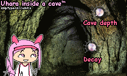
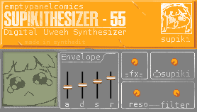

do you want to make music in the worst way possible? why?
here are some horrible synthedit plugins you can use for your "music production"

why is she inside of a cave? get her out of there stat, please. she's not built for the caves
The character 'Haru Uhara' is owned by Cygames. We do not claim ownership of this character.
Download for free(VST2 Only)

finally, the worlds first synthesizer using a patent pending monatium made "uweeh" synthesis (its a soundfont)
The character 'Speaki' is owned by EPID Games. We do not claim ownership of this character.
Download for free (VST2 Only)
(c) 20xx, JJJ n' Co, Empty Panel Comics
we do not claim ownership of these characters, and do not obtain any monetary gains from them.